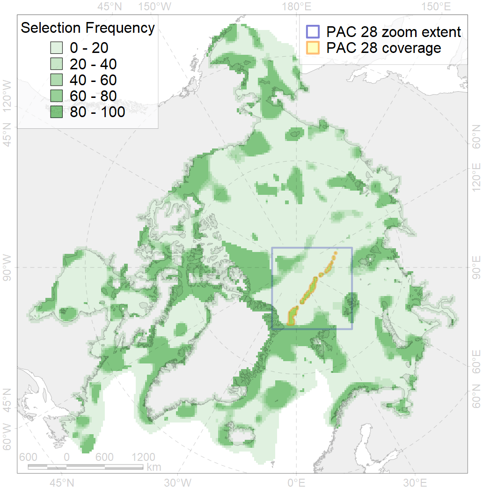
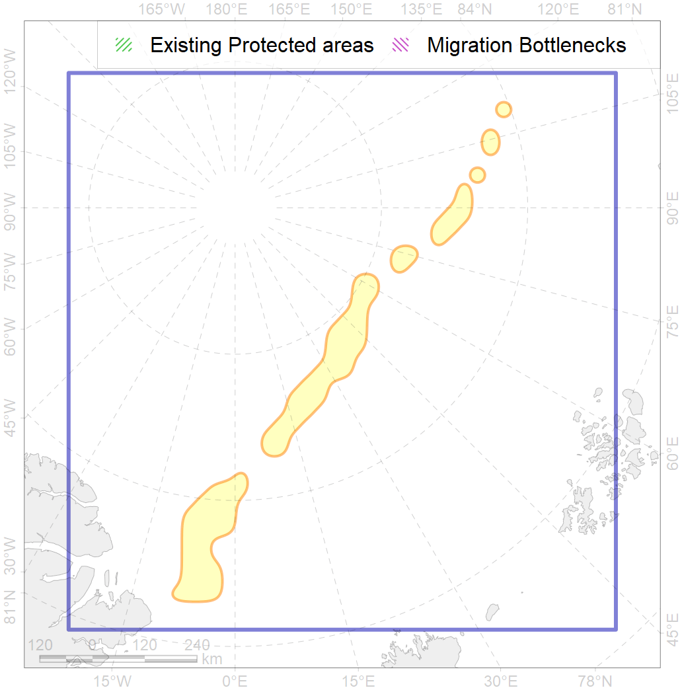

28
For more information regarding this PAC and to conduct custom spatial analysis using the PAC data or any spatial query, please consult Accenter.

2
CFs entirely within the PAC area
11
CFs at least 25% within the PAC area
8
CFs with their target entirely achieved in the PAC
13
CFs with at least 50% of their target achieved in the PAC
| CF ID | CF Name | Proportion in the PAC | Conservation Target | Contribution to ArcNet Target Achievement | PAC’s Contribution to the Achieved Target |
|---|---|---|---|---|---|
| 7191 | Benthic communities, VI.2.2. Gakkerl Ridge and Ermak Plateau terraces | 100.0% | 100.0% | 100.0% | 100.0% |
| 7059 | Biological communities, Gakkel Ridge central rift mountains | 100.0% | 75.0% | 132.7% | 100.0% |
| 7063 | Biological communities, Gakkel Ridge western rift mountains | 98.6% | 75.0% | 130.8% | 99.8% |
| 7057 | Biological communities, vents | 90.9% | 75.0% | 109.3% | 99.9% |
| 7061 | Biological communities, Gakkel Ridge eastern rift mountains | 82.5% | 75.0% | 104.8% | 96.1% |
| 7058 | Biological communities, Gakkel Ridge central flank mountains | 82.1% | 75.0% | 102.4% | 96.5% |
| 7062 | Biological communities, Gakkel Ridge western flank mountains | 80.8% | 75.0% | 106.6% | 97.0% |
| 7060 | Biological communities, Gakkel Ridge eastern flank mountains | 79.5% | 75.0% | 99.8% | 92.7% |
| 7194 | Benthic communities, VI.2.6. Gakkerl Ridge and Ermak Plateau rift valleys | 58.2% | 69.0% | 69.7% | 69.5% |
| 7192 | Benthic communities, VI.2.3. Gakkerl Ridge and Ermak Plateau ridges | 49.0% | 52.9% | 79.0% | 78.4% |
| 7193 | Benthic communities, VI.2.4. Gakkerl Ridge and Ermak Plateau spreading ridges | 32.8% | 28.4% | 98.0% | 62.7% |
| 7178 | Benthic communities, VII.2.4. Amundsen and Nansen basins abyssal mountains | 24.6% | 12.8% | 170.0% | 80.9% |
| 7195 | Benthic communities, VI.2.7. Gakkerl Ridge and Ermak Plateau canyons | 14.6% | 100.0% | 14.6% | 14.6% |
| 7017 | Benthic communities, Amundsen and Nansen Basins abyssal Zoogeographic region | 5.5% | 7.0% | 66.9% | 36.6% |
| 7177 | Benthic communities, VII.2.3. Amundsen and Nansen basins abyssal hills | 2.3% | 8.6% | 17.6% | 16.5% |
| 3049 | Multiyear Ice biological communities, September, Central Arctic Ocean | 2.2% | 18.0% | 10.3% | 10.2% |